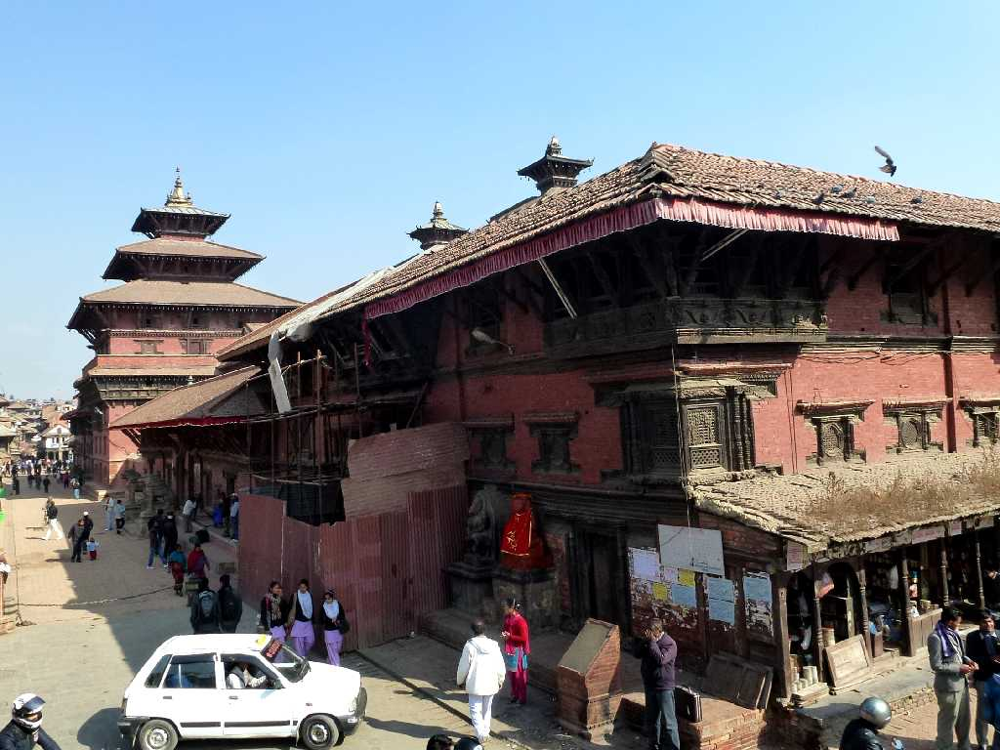
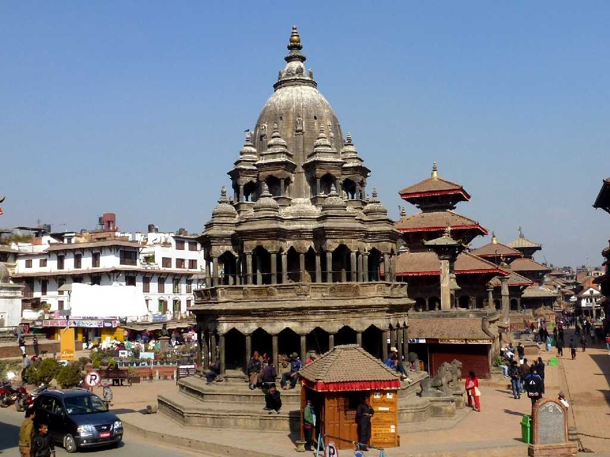
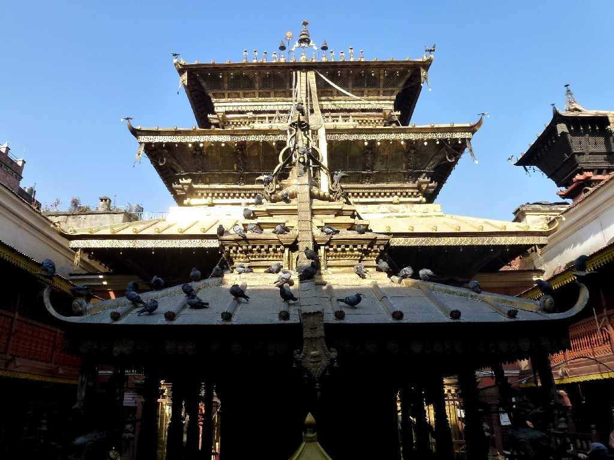
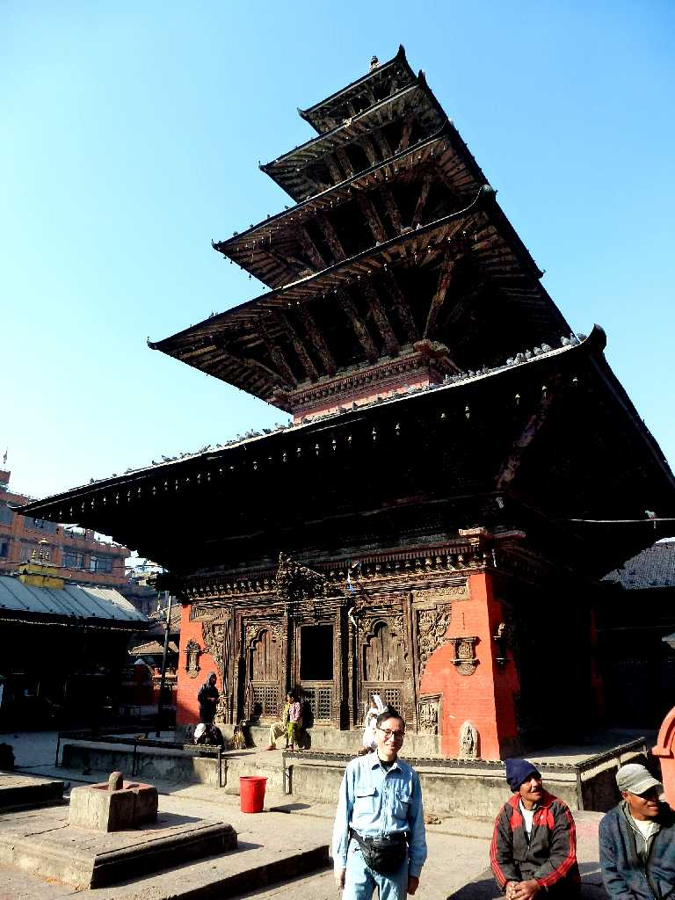
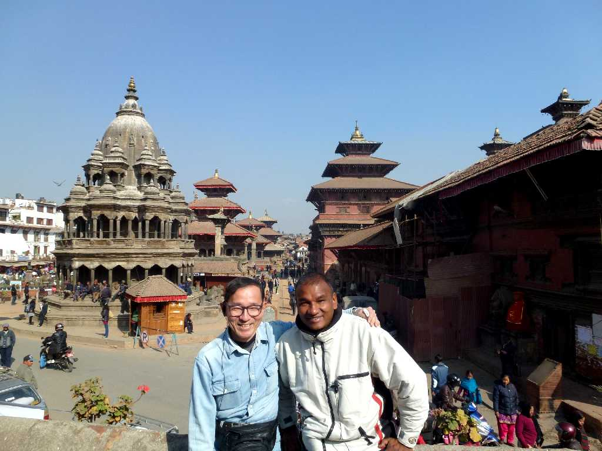

Krishna Mandir Darbar Square Patan
美の都と云われるパタン王宮前のダルバール広場

Palace Patan
１５世紀にネワール王朝によって創られた王宮

Krishna Mandir Darbar Square
１６３７年に創られたヒンドゥー教のクリシュナ神を祀った寺院

Hiranya Varna Mahavihar Golden Temple
１４０９年に創られた金箔で覆われた美しい仏教寺院

Kumbeshwar Temple
高さ３０ｍの塔がそびえ立つ１３９２年に創られたパタンで最古のヒンドゥー教寺院

December 26 2012 Darbar Square Patan